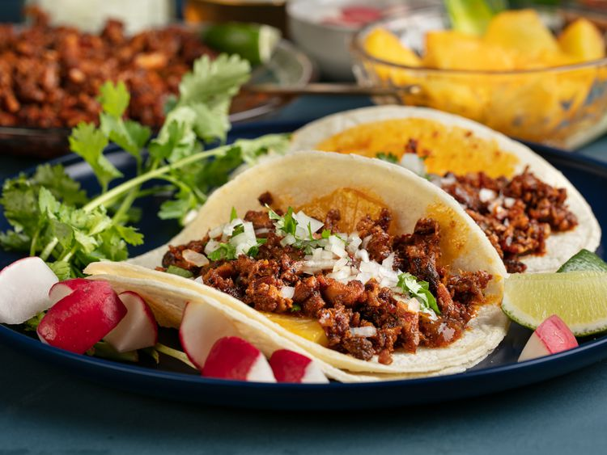

Tacos Baby!!!
This one should be easy as well. The hardest one of the three, but you'll be fine.

You will need the following
- Tortillas
- Ground Beef
- Tomatoes
- Chunky Salsa
- Shredded Lettuce
- Cheddar Cheese
Follow the next steps and you should be all good to go!
- Cook beef in 10-inch skillet over medium heat 8 to 10 minutes, stirring occasionally, until brown; drain.
- Stir salsa into beef. Heat to boiling, stirring constantly; reduce heat to medium-low. Cook 5 minutes, stirring occasionally. Pour beef mixture into large serving bowl.
- Heat taco shells as directed on package. Serve taco shells with beef mixture, lettuce, tomato and cheese.
- Enjoy!
Home